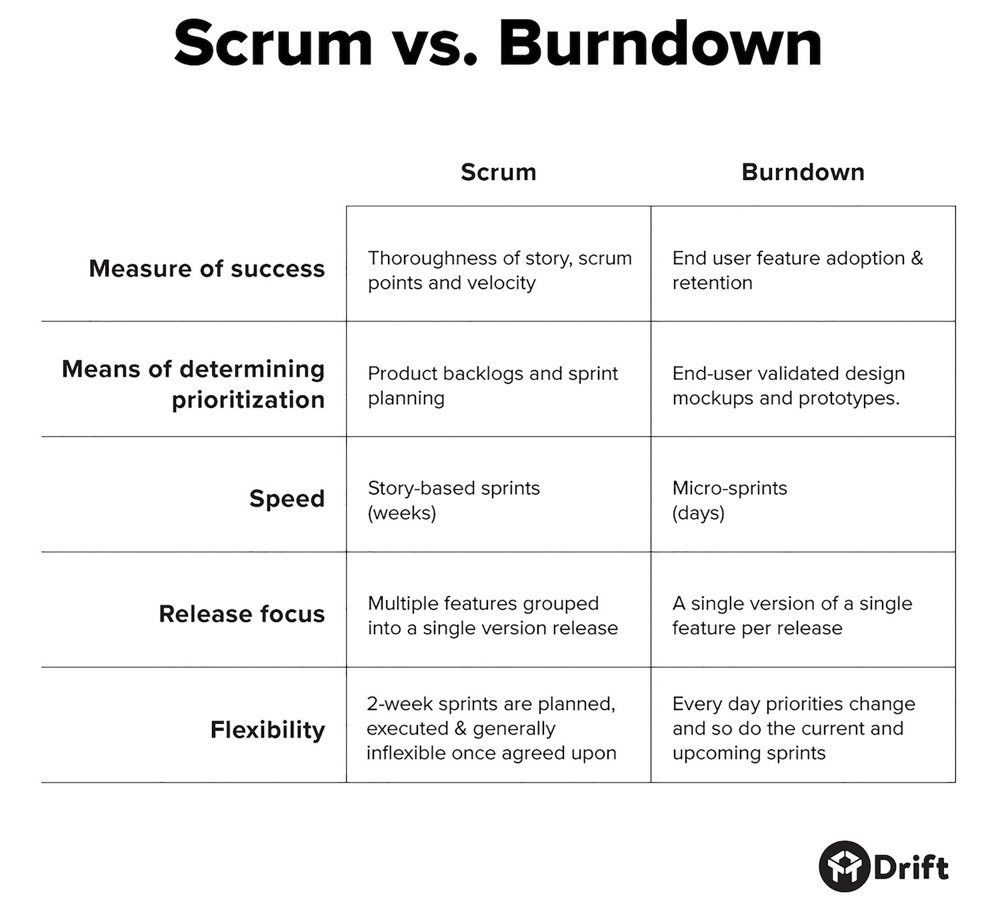

Welcome to the second episode of Product to Product, a podcast for / by product people.
Listen to the episode below:


This episode features Matt Bilotti, product manager at Drift. Matt recently co-authored an ebook with Drift’s CEO, David Cancel, called “Burndown: A better way to build products.” The ebook explores the Burndown framework that Drift’s product team has adopted for product development.
But what is Burndown? Think of Burndown as a more iterative and flexible version of agile that’s heavily influenced by user feedback. Comprising of smaller releases and shorter sprints (i.e. micro-sprints), Burndown helps product teams make better decisions driven by user feedback because, unlike your traditional scrum and agile sprints, micro-sprints can change practically anytime based on incoming data and feedback the team receives. For more context, here’s a chart comparing Burndown and agile from Drift’s ebook:

According to Drift’s ebook, not only has the company perfected Burndown, but switching over to the framework has resulted in a 5x increase in revenue. So our CEO Latif picked Matt’s brain on how the framework compares to agile, some common pain points and challenges, and how Burndown feeds into Drift’s customer-first approach to products.
The episode can be listened to above, and we’ve also included a transcript below. You can subscribe to Product to Product on iTunes (here) and Google Play (here), or get the latest episodes delivered to your inbox by subscribing here.

Latif: My man, Matt, how are you doing today?
Matt: Good, how’s it going?
Latif: Great, thanks! So to begin, I’d love to understand a little bit about the Burndown framework. What are its key components and how do you roll it out to a small team?
Matt: Some key components are that we have a few first principles associated with it, which are that it’s flexible, it’s customer-driven, it’s iterative—which I think is a really key piece of it. It’s rapid, visual, transparent, incremental. It’s always evolving—which I think is another core foundation of it—and it favors data over internal opinions, and it’s a focused framework.That’s, at a high level, what Burndown is really all about.
In terms of rolling it out to a team, I think what I’ve seen from people who have read about Burndown and sent feedback my way or asked questions about it, it works really well. It’s a great starting point for a new startup if you have a few people—or maybe you have one PM and one product team. It’s a really great and easy way to get going because it is simple to kick off. There’s always going to be the most optimal way to start with a new framework, and that’s always going to be the very beginning of a company. It works really well there.
In a broader company, I think what I’ve found is usually there’s one PM that will get really excited about Burndown, and they have their own framework within the rest of the company. That team will kind of champion it for a few months, work through it, see how it works with their company and their process, and then start to roll it out to other teams there. So scaling it and starting it with one single team and building it out has shown success so far.
Latif: Fantastic. That sounds very similar to the way agile was introduced into a lot of organizations that were traditionally waterfall. What are some of the differences between Burndown and agile?
Matt: One thing that I would say is I actually don’t think that Burndown is too far off from agile. I think some of the main differences are that it is iterative and flexible; it’s built to be a framework that changes. What we have built and what is in the Burndown book, and in some blog posts that we have shared, is a starting point. What we’ve found is that—and the way that it’s built—is that it works differently for different companies. I think a lot of companies in the startup world right now, stick to scrum. With scrum, it’s pretty rigid. Things are based on long multi-week sprints. I think one of the pieces that makes Burndown really different is this concept of micro-sprints.
"What kind of gets lost in your traditional methods is: where’s the customer?"
It’s not about how much can we fit into this next two-week sprint cycle. It’s more what is the most important thing we could work on right now as a team. And that will change every day, every couple of days. There’s no lock-in, so there’s no sense of, “Well, we all agreed that we were going to work on that thing.”
The idea is that, let’s say we’re building new reporting and there’s 100 things to do with reporting, and at the start of it we’ll say, “Alright—reporting is the most important thing that we could be doing now.” Let’s say we build 60% of it, and what we realize is that no one really cares about it, or that it’s way off, or something’s wrong. Instead of continuing with that final 40% or never having the first 60% in the first place, it’s more about, let’s get the 60% out. Let’s look at it. Let’s see what’s going on. And hey, maybe something’s happening with the market that says, “The reporting really isn’t the most interesting thing. We’re making a little bit of a change in the way that we’re approaching things. Let’s move over to a better dashboard.” It’s all about how do you find and focus on what’s the thing that you can do now, rather than packing it into a very rigid cycle.
Latif: Got you. It sounds like the micro-sprints approach enables the thinking of the product and design team to maybe test a little bit more of their hypothesis and not be too presumptuous, even if the customer says they absolutely need something. How do you balance that with a product manager who understands and really strongly believes because they’ve gotten so much customer data that this is the right thing to build and get it to 100%?
Matt: I think it’s the foundation of the tension that comes with this, for sure. At the end of the day, and what I’ve found, with my team and a couple of the other teams here, is that when everyone gets on board with the concept behind Burndown, it’s really all about the customer. So what’s happened over the past year or so is we’ve seen the engineers develop more and more of a framework and mindset from the customer’s point of view. They’re constantly pushing back to say, “Are we sure that this is the best thing for the customer? Where’s the data that proves that this is important? Because what I’m hearing is this other stuff.”
So it forces this conversation around the customer. At the end of the day the engineer wants to build it like this because it’s more scalable. The designer wants it to look like this because it’s got more delight moments. The product person just wants the foundational value to get out there because it helps with the business purposes. What kind of gets lost in your traditional methods is: where’s the customer? Everyone’s fighting for their own point of reference to say, “Well, the design is the more important thing.” Or, “The story that the product person is trying to push forward is more important.” So it really dives the conversation deep into, “What is the most valuable piece?”
To come back to your question, if the product manager can’t defend that and have a good enough story and case behind it, then you’ve got one of two things on your hands. You’ve got:
- It’s not the right thing to do and you should be doing something else if there’s no compelling story behind it
- The PM needs to grow and learn a little bit more to get to a point where they can develop the story around it enough so that everyone can say, “It’s the most important thing that we have here because we all see what this will add for the customer.”
Latif: What I like about that is it sounds like over time everyone understands the customer better. Talk to me about how releases end up getting managed, because I’m getting the sense that micro-sprints have this incredible benefit to shipping quickly. Is there some back end troubles with coordination on a release, and quality assurance? How does that get managed as part of Burndown?
Matt: It’s certainly something that comes up. The way that I think about it is it’s a little bit of chaos, but it’s organized chaos. So that stuff happens. We’re shipping every single day trying to get things out the door, and we wind up with this battle that I think every product team runs into no matter what framework you’ve adopted. How do we fit in all of these other fixes or things that are coming up? Or, “That got shipped but we weren’t thinking about this other thing that’s coming down the pipe.” Like, those things are going to come up no matter what. I think the way that we try to think about it is a couple of things. We generally think of our time as 80% new features, 20% bugs and reliability and scalability and all of those other pieces. So that 20%, it’s really on the engineers to own that. With Burndown, it puts the true ownership on the engineers to say, “You’re responsible for making sure that all dependencies are taken care of and thought through.”
"The way that I think about it is it’s a little bit of chaos, but it’s organized chaos."
At the end of the day, the way that we think about our product teams is that it’s the tech lead that is truly the one who is responsible for the product. So at a high level, the team looks like a PM, a tech lead, a back end engineer, a front end engineer, and a designer, and it scales out to add other roles or other engineers. We’re starting to experiment with that. But at the end of the day, if it breaks, or if it doesn’t work, the only person who could truly fix it is the tech lead.
So it creates more of this feeling of, from the tech lead’s point of view, “I own this. I’ve got to make sure that this is going to work. We’ve got to get out quick, but I’m the one who’s looking out for, ‘Hey, it’s going to break this other thing,’ or, ‘Hey, we need to make sure that we’re coordinating with this other team.'” So it certainly comes up, and I think the benefit of it is that me as a PM, I’m not running around trying to coordinate, this back end engineer on my team is going to ship something that works on code for the other back end engineer. Because I’m never going to be the best one at doing that because it’s not my specialty.
Latif: My only potential pushback would be, is that, do you have a hard time recruiting developers that want to be in a position where they’re doing constant coordination, since that’s maybe less towards their liking as an engineer who wants to be in maker-mode and code all the time? How have you found that found a recruiting standpoint?
Matt: There’s a couple pieces of it. One is that the project management aspect gets spread out a little bit more amongst everyone, so as the PM, I’m responsible for project managing the stories that we’re working through, why they’re important, framing the problems, what are the jobs to be done. Then, design kind of takes it on; we share that. Of course, in any of this, the other roles are part of it. So, sure, I’m creating the stories and doing all of that, but I’m bringing in engineers as we go.
So along the way, the tech lead is the one owning the project management towards the end of it. I think you have some engineers that are fundamentally just going to want to ship code, work, and say, “Tell me what to do. I’ll build it.” What we’ve found is that the best leaders are the ones who are most excited about that other stuff, because at the end of the day, they’re the ones who are truly saying, “I own this, and I’ve got to make sure that this works and that our team is proud of it.”
"My job is to frame the problem & gather data so that the rest of the team can build solutions."
We actually just brought on an engineer who, during his first week, he wrote a blog post about how excited he was about joining Drift because we’re super customer-centric. He said, “At other companies, the product teams all talk about being customer-centric, and focus on their problems.” And he said because of the process that we have in place here and the framework, he was on calls with customers immediately. He was a part of the planning process. He knew why these things were being built. He got to give feedback on the stories, and he wasn’t put in this world where he felt constrained, and not coordinating with other engineers.
We found that those are just fundamentally the kinds of people that we want. Because we have this framework built behind our product team, it’s created this culture where people really get excited about that. They want to be a part of the story. They want to be a part of the value, and they want to do and own the things that will make that happen. If that happens to be the project management piece, they’re more than willing to jump in there.
Latif: I think one of the things a lot of organizations definitely face is they say they’re customer-centric from their product and engineering side, but they often aren’t. What are some of the tactical things you’ve done to be customer-centric?
Matt: One thing that we do as a company which isn’t necessarily a part of the Burndown framework, but I think is very related, is we have every new employee at Drift—it doesn’t matter what your role is—go on chat duty. For a two-hour shift, once a week every week for your first six to eight months in joining Drift, you are the person on chat talking to our customers. You’re helping them with their bugs or issues. You’re talking through stuff with them.
So right out of the gate we’ve created this environment where engineers are building relationships with customers, they’re talking to them once a week, they understand who they are, they get the kinds of questions that they’re asking. When certain things come in and the engineer who built that thing is on chat duty and they look at it and be like, “Wow. That thing … I did a bad job with that. I’m going to go fix it right now.” You get this immediate empathy that you wouldn’t get otherwise. I think that’s one point across the board that’s slightly separate from Burndown, but that really adds value there.
The other piece is because Burndown is so visual and focused on the job, it forces everyone to get in the frame of reference of, “What is the thing that the customer’s trying to do?” We’re talking less about solutions—at least in the process of planning—and from the PM’s point of view, it’s not my job to come up with the solutions. My job is to frame the problem and gather data so that the rest of the team can build solutions. As soon as you have that then the design and engineering teams all start to look at this and say, “Is this going to add value?” And then they ask questions.
"With Burndown it goes one step further. It’s about getting raw data straight to the engineers."
I had an engineer push back on me last week. He was like, “I don’t know if this is the right thing that we should be doing.” And I asked him why. He said, “Well, I haven’t heard this from customers. Where’s the proof to say that people are asking for this or this is a challenge that they’re having?” And I said, “You know what? That’s a really great point. I kind of skimped on this one.” And it showed up right away because everyone’s starting to think and ask about these questions from the true perspective of, “What is the problem we’re trying to solve?” Which then makes sure that the data in the conversation is around that.
At that point it’s like, “Yeah, sure. I totally agree. If you’re not on board, let’s get you on some customer calls.” So I had him join me for a couple of customer conversations, I sent them chat conversations that came through that would be helpful to read through that are referencing the pain.
Also, one of the other things is that we’re far less focused on second-hand feedback or information. In a lot of product orgs, or some of the ones that I’ve seen, the product manager does this super filter on the data that’s coming through. They get all this data, they gather it, and then say, like, “Here’s what we’re going to do and this is why it’s important.”
With Burndown it goes one step further.It’s about getting raw data straight to the engineers. If that means that I’m on a call and I know that this thing is something that we’re going to have to work on, I will tap an engineer on the shoulder and say, “Hey, come join me.” Or the Trello cards will be loaded with screenshots of customers saying, “This doesn’t seem right.” Or, “I wish I could do this thing.” Sure, I can distill it and give people a general sense of why something’s important, but to have all the other stuff there for people to dig through gives them a sense of, “Alright—there’s a lot of stuff here that the customer’s saying themselves.” If I still am not sure if it aligns, then it’s a conversation that comes up between the engineer and product manager like what happened last week where we say, “Let’s make sure that we dig a little deeper here.”
Latif: That first point actually caught me with the support. We do two weeks of support for people that start, but what I really liked the way you do it is you have this cadence that goes on for six to eight months. It’s not just this one-time kind of hit early on, it’s a more continuous approach, even though they’re in shorter bursts. I think that’s something I might actually steal for some of the onboarding we’re doing with new hires.
Matt: Yeah, it’s awesome. Some of the coolest things that come out of it are the engineers start to actually reference customers that they’ve built a relationship with over time. Because sometimes you get customers that every Wednesday afternoon is their time to work on this thing. And there’s one engineer that happens to be there because their chat duty is Wednesday afternoon. And they start to say, “Well, I talked to Cathy about this last week and she wasn’t super excited.” So it really helps to develop those true relationships.
Latif: That’s fantastic. What are some of the pain points that you experience? What were some of the challenges going from maybe a scrum and agile environment to Burndown?
Matt: The hardest thing is, “Hey, my team is using this other process. I don’t know if I want to be the guy that’s telling them to relearn something.” So a couple of things that I’ve recommended or that I’ve seen people have success with is start small. Maybe you’re in a two-week sprint, scrum-based environment. Try to break things out more into micro-sprints during those sprints. Start to pull some pieces, and over time you can develop into it. I think coming back to one of the first principles of Burndown is that it is iterative and flexible. The framework itself is not here to say, “Here’s how it’s going to work,” or “Don’t change it or you’re breaking it.” It’s much more of, environments are going to be different. So Burndown here at Drift looks a little different than it looked at HubSpot.
I think at a high level it’s like, don’t worry too much about the specific detail. Focus on getting your team rooted in these principles of actual customer centricity. Really being focused on getting value out fast, on the visual, the job, and the problem set and moving away from talking too much about the solution.
"Focus on getting your team rooted in these principles of actual customer centricity."
A quote that one of my PM friends at HubSpot shared with me a couple of years back was from Einstein that said something along the lines of (I’m not going to get it verbatim), “If I have ten hours to solve a problem, I’ll spend the first nine and a half to understand what the problem is and all the context around it, and then the final half an hour to actually create the solution.” So grab these foundational pieces, get your team more in sync with them. Then you can start to change the way you’re using your tools to better suit it, much more so than ripping the plug on what you’re using today and jumping right over right away.
Latif: Your eBook talked about a 5x increase in revenue after implementing Burndown. How did you get to that result and give some color around how you even measured that?
Matt: It’s hard to measure those kinds of things. Part of it is we’re a growing company. Part of it is our brand is getting better, our marketing is better. How we were able to pull that out is when we first started we didn’t really have any customers. We were just throwing things at the wall. At that point in time, I was spending a lot of my time more focused on, “Hey, we’re going to build this feature.” And far less focused on, “Here is the value that we can add because of pain X, Y, and Z.”
So once we really started shifting towards that and we started bringing people into this more documented process, that was the time when we really started to find that we were getting to product-market fit faster. And spent a lot of the first eight, nine months that I was here experimenting, trying different things, improving, and saying, “We’re going to focus on this persona, and then this one.” And Burndown really helped us focus in and get the initial product, a conversation-based sales and marketing platform out the door. And it was a couple months prior to that that we really started getting more of a formal way of doing things down on paper to say, “We’re going to start with the problem. Then we’re going to have design create the possible solution for it.” So we really started to see those results a few months out.
Latif: Where do you see this framework evolving for you guys at Drift now that you’ve been utilizing it for such a period of time? What’s its next evolution? Or do you think it’s in sort of a steady state right now?
Matt: I think the tools are going to change. I think that Trello is getting a little hard for us to really manage all that we have going on. I think we’ve moved a little bit more to a process of agreeing on, “This thing is good to go.” Because of the point that you brought up earlier, it moved us a little bit too much towards that quick-ship mindset. Then, we’d look at it the next day and be like, “Hang on. We probably should have spent a couple more hours just getting that all the way through.”
So what we’re finding is that we’re starting to add more checks and balances in to make sure that what is going out the door is adding the best value. The tools are going to change (they’re already changing a bunch) and at a baseline, this is exactly why a first principle of Burndown is that it’s flexible and iterative, because it will take on new shapes and sizes. The shape that it takes is what you make it. The baseline is the most important thing to grab a hold of. Once you have that and the rest of your team is truly on board and agrees with it, then you will find the tools and the processes that work for you that will continue to evolve over time.
Latif: Sounds good. Thank you so much for your time, Matt, and your insights on Burndown.
Matt: Yeah, and thank you so much for having me—really appreciate it.
Subscribe to Product to Product on iTunes (here) and Google Play (here), or get the latest episodes delivered to your inbox by subscribing here.